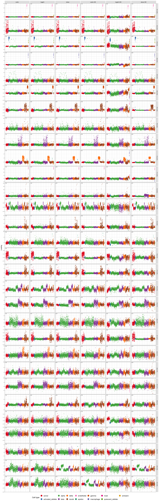
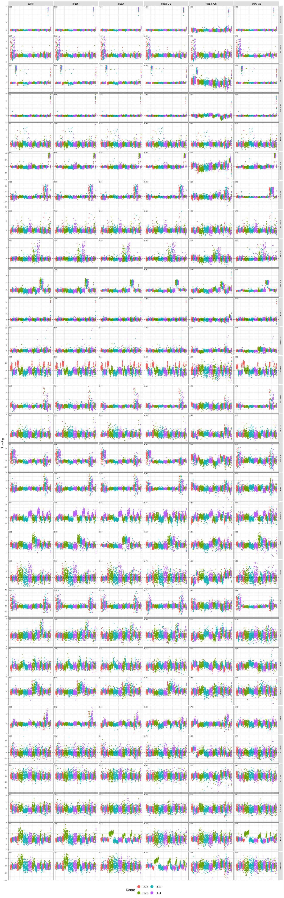

Last updated: 2026-09-16
Checks: 7 0
Knit directory: single-cell-jamboree/analysis/
This reproducible R Markdown analysis was created with workflowr (version 1.7.2). The Checks tab describes the reproducibility checks that were applied when the results were created. The Past versions tab lists the development history.
Great! Since the R Markdown file has been committed to the Git repository, you know the exact version of the code that produced these results.
Great job! The global environment was empty. Objects defined in the global environment can affect the analysis in your R Markdown file in unknown ways. For reproduciblity it’s best to always run the code in an empty environment.
The command set.seed(1) was run prior to running the code in the R Markdown file. Setting a seed ensures that any results that rely on randomness, e.g. subsampling or permutations, are reproducible.
Great job! Recording the operating system, R version, and package versions is critical for reproducibility.
Nice! There were no cached chunks for this analysis, so you can be confident that you successfully produced the results during this run.
Great job! Using relative paths to the files within your workflowr project makes it easier to run your code on other machines.
Great! You are using Git for version control. Tracking code development and connecting the code version to the results is critical for reproducibility.
The results in this page were generated with repository version 3c56a62. See the Past versions tab to see a history of the changes made to the R Markdown and HTML files.
Note that you need to be careful to ensure that all relevant files for the analysis have been committed to Git prior to generating the results (you can use wflow_publish or wflow_git_commit). workflowr only checks the R Markdown file, but you know if there are other scripts or data files that it depends on. Below is the status of the Git repository when the results were generated:
Ignored files:
Ignored: .Rhistory
Ignored: .Rproj.user/
Ignored: analysis/.RData
Untracked files:
Untracked: analysis/Rplot.pdf
Untracked: analysis/fit_pancreas_celseq2_gbcd.Rout
Untracked: analysis/fit_pancreas_celseq2_snmf_k100.R
Untracked: analysis/fit_pancreas_celseq2_snmf_k40.R
Untracked: analysis/fit_pancreas_celseq2_snmf_k40.Rout
Untracked: analysis/pancreas_celseq2_snmf_k100.RData
Untracked: analysis/pancreas_celseq2_snmf_ms.Rmd
Untracked: output/pancreas_celseq2_snmf_k100.RData
Untracked: output/pancreas_celseq2_snmf_k40.RData
Unstaged changes:
Modified: analysis/pancreas_celseq2_ica.Rmd
Modified: single-cell-jamboree.Rproj
Note that any generated files, e.g. HTML, png, CSS, etc., are not included in this status report because it is ok for generated content to have uncommitted changes.
These are the previous versions of the repository in which changes were made to the R Markdown (analysis/pancreas_celseq2_ica_02.Rmd) and HTML (docs/pancreas_celseq2_ica_02.html) files. If you’ve configured a remote Git repository (see ?wflow_git_remote), click on the hyperlinks in the table below to view the files as they were in that past version.
| File | Version | Author | Date | Message |
|---|---|---|---|---|
| Rmd | 3c56a62 | Matthew Stephens | 2026-09-16 | Add pancreas_celseq2_ica_02: compare contrasts and orthogonalization |
| Rmd | 369b5dd | Matthew Stephens | 2026-09-16 | Add tabbed cell type/donor/donor+batch coloring to loading plots |
| html | d00107a | Matthew Stephens | 2026-09-16 | Build site. |
| Rmd | 3602676 | Matthew Stephens | 2026-09-16 | Add Gram-Schmidt versions of all three contrast functions |
| html | ec41b4c | Matthew Stephens | 2026-09-16 | Build site. |
| Rmd | d3dbf5b | Matthew Stephens | 2026-09-16 | Fix cubic contrast: G(x)=x^3 so g=3x^2, g prime=6x |
| html | 3d4592e | Matthew Stephens | 2026-09-16 | Build site. |
| Rmd | 4610037 | Matthew Stephens | 2026-09-16 | Fix: centre data before whitening |
| html | e748825 | Matthew Stephens | 2026-09-16 | Build site. |
| Rmd | a8d1267 | Matthew Stephens | 2026-09-16 | Add pancreas_celseq2_ica_02: rank-r ICA with cubic, logPhi, x|x| |
A second look at ICA on the pancreas CEL-seq2 data, incorporating lessons from the first analysis (pancreas_celseq2_ica.Rmd). Key differences from the first analysis:
We focus on contrast functions chosen to favour one-sided/sparse sources, and avoid combining groups. For example, \(G(x) = x^3\) (skewness), \(G(x) = \log\Phi(\alpha x)\) (log-normal CDF), and \(G(x) = x|x|\) (the tilting term of TLC without the log-cosh). This means we can center the data without breaking things, so we no longer need to augment by an intercept.
We focus on rank-\(r\) fastICA, whitening to 30 PCs and keeping all \(r = 30\) components.
We use both polar and Gram Schmidt to do orthogonalization. In GS each iteration applies the contrast update followed by Gram-Schmidt reorthogonalization. Components are ordered by decreasing objective before GS, so the best-objective direction is processed first and kept exactly; subsequent components are deflated against all preceding ones. After GS the columns remain orthonormal.
library(Matrix)
library(ggplot2)
load("../data/pancreas.RData")
set.seed(1)
i <- which(sample_info$tech == "celseq2")
sample_info <- sample_info[i, ]
counts <- counts[i, ]
x <- colSums(counts > 0)
j <- which(x > 9)
counts <- counts[, j]
a <- 1
s <- rowSums(counts)
s <- s / mean(s)
Y <- MatrixExtra::mapSparse(counts / (a * s), log1p)
Y <- scale(Y, scale = FALSE) # centre columnsn <- nrow(Y)
n.comp <- 30 # PCs retained for whitening
r <- 30 # components extracted by ICA (r <= n.comp)
Y.svd <- svd(Y, nu = n.comp, nv = 0)
# U: n x n.comp, orthonormal columns (left singular vectors of centred Y)
U_c <- Y.svd$u[, 1:n.comp]
# Whitened row space (n.comp x n, as used by rank-r fastICA)
U_w <- sqrt(n) * t(U_c)Here 30 components are extracted from a 30-dimensional whitened space, so each W is square (30 \(\times\) 30) with orthonormal columns and the components span the whole whitened space. Setting r below n.comp would instead let ICA keep only the most interesting directions and leave the remainder unmodelled.
celltype_palette <- c(
"#E41A1C", "#377EB8", "#4DAF4A", "#984EA3", "#FF7F00",
"#A65628", "#F781BF", "#1B9E77", "#D95F02", "#7570B3",
"#E7298A", "#66A61E", "#E6AB02", "#A6761D", "#666666"
)
# Polar factor via eigendecomposition (avoids SVD column reordering).
polar <- function(W) {
eig <- eigen(t(W) %*% W, symmetric = TRUE)
Ainvhalf <- eig$vectors %*%
diag(1 / sqrt(pmax(eig$values, 1e-14))) %*%
t(eig$vectors)
W %*% Ainvhalf
}A contrast is specified by the function \(G\) whose column mean the update maximizes. deriv() returns \(G'\) and \(G''\) evaluated at \(P = U^\top W\) (the G and G2 terms of the symmetric fastICA update) and obj() returns \(\mathrm{colMeans}(G(L))\).
contrast_defs <- list(
# G(x) = x^3: G' = 3x^2, G'' = 6x
cubic = list(
deriv = function(P) list(G = 3 * P^2, G2 = 6 * P),
obj = function(L) colMeans(L^3)
),
# G(x) = log Phi(alpha*x), h = phi/Phi
logphi = list(
deriv = function(P, alpha = 2) {
u <- alpha * P
h <- exp(dnorm(u, log = TRUE) - pnorm(u, log.p = TRUE))
list(G = alpha * h, G2 = alpha^2 * (-u * h - h^2))
},
obj = function(L, alpha = 2) colMeans(pnorm(alpha * L, log.p = TRUE))
),
# G(x) = x|x|: G' = 2|x|, G'' = 2 sign(x)
skew = list(
deriv = function(P) list(G = 2 * abs(P), G2 = 2 * sign(P)),
obj = function(L) colMeans(L * abs(L))
)
)
# Gram-Schmidt reorthogonalization ordered by decreasing objective.
# W: n.comp x r with orthonormal columns; L: n x r loadings (= t(U) %*% W).
# The best-objective direction is processed first and so is kept exactly;
# each later column is deflated against all preceding ones.
gs_reorth_W <- function(W, L, obj_fn) {
ord <- order(obj_fn(L), decreasing = TRUE)
V <- W[, ord, drop = FALSE]
for (j in seq_len(ncol(V))) {
if (j > 1)
for (l in seq_len(j - 1))
V[, j] <- V[, j] - sum(V[, j] * V[, l]) * V[, l]
nrm <- sqrt(sum(V[, j]^2))
if (nrm > 1e-10) V[, j] <- V[, j] / nrm
}
V
}
# Rank-r symmetric fastICA. contrast picks an entry of contrast_defs; orth is
# the orthogonalization applied after each update, either the polar factor or
# Gram-Schmidt ordered by objective. Returns the n x r loadings t(U) %*% W.
run_fastica <- function(U, contrast, orth = c("polar", "gs"),
r = nrow(U), n_iter = 50, seed = 1) {
orth <- match.arg(orth)
cf <- contrast_defs[[contrast]]
set.seed(seed)
W <- polar(matrix(rnorm(nrow(U) * r), nrow(U), r))
for (i in seq_len(n_iter)) {
d <- cf$deriv(t(U) %*% W)
W <- U %*% d$G - sweep(W, 2, colSums(d$G2), "*")
W <- if (orth == "polar") polar(W)
else gs_reorth_W(W, t(U) %*% W, cf$obj)
}
t(U) %*% W
}Every method below is the same driver with a different contrast / orth pair, all from the same random start (seed = 1) and the same number of iterations.
method_spec <- list(
"cubic" = list(contrast = "cubic", orth = "polar"),
"logphi" = list(contrast = "logphi", orth = "polar"),
"skew" = list(contrast = "skew", orth = "polar"),
"cubic-GS" = list(contrast = "cubic", orth = "gs"),
"logphi-GS" = list(contrast = "logphi", orth = "gs"),
"skew-GS" = list(contrast = "skew", orth = "gs")
)
methods_L <- lapply(method_spec,
function(m) run_fastica(U_w, m$contrast, m$orth,
r = r, n_iter = 50))
# Objective belonging to each method, for ordering and labelling its panels.
obj_of <- function(m) contrast_defs[[method_spec[[m]]$contrast]]$obj
sapply(methods_L, dim) cubic logphi skew cubic-GS logphi-GS skew-GS
[1,] 2285 2285 2285 2285 2285 2285
[2,] 30 30 30 30 30 30All six methods are aligned to a common reference, the polar cubic solution. For each method the factors are matched to the reference by maximizing the total absolute correlation (Hungarian algorithm), then sign-flipped so each matched factor correlates positively with its reference factor. (Sign flipping is probably unnecessary here because we are using asymmetric contrasts, but necessary in general.)
Factors are then ordered by how well the methods agree on them: the mean column below is the average absolute correlation with the reference over the five non-reference methods, and rows are sorted by it, so the factors all methods recover go at the top and the contested ones at the bottom. Values near 1 mean a method recovers essentially the same factor as the reference; small values mean the factor has no good counterpart. The reference column is 1 by construction and is excluded from the mean.
ref_name <- "cubic"
Lc <- methods_L[[ref_name]]
Lref <- Lc[, order(obj_of(ref_name)(Lc), decreasing = TRUE), drop = FALSE]
# Match columns of L to those of Lref so as to maximize total |correlation|,
# then flip signs so each matched factor correlates positively with reference.
match_to_ref <- function(L, Lref) {
C <- cor(Lref, L)
pr <- RcppHungarian::HungarianSolver(-abs(C))$pairs
perm <- pr[order(pr[, 1]), 2]
cc <- C[cbind(seq_along(perm), perm)]
s <- sign(cc)
s[s == 0] <- 1
list(L = sweep(L[, perm, drop = FALSE], 2, s, "*"), cor = abs(cc))
}
aligned <- lapply(methods_L, match_to_ref, Lref = Lref)
match_cor <- sapply(aligned, `[[`, "cor")
# Reorder factors so the best-agreeing ones come first. Agreement is the mean
# |cor| with the reference over the five non-reference methods (the reference
# column is identically 1 and so carries no information).
agree <- rowMeans(match_cor[, setdiff(colnames(match_cor), ref_name),
drop = FALSE])
ord <- order(agree, decreasing = TRUE)
Lref <- Lref[, ord, drop = FALSE]
aligned <- lapply(aligned, function(a)
list(L = a$L[, ord, drop = FALSE], cor = a$cor[ord]))
match_cor <- match_cor[ord, , drop = FALSE]
agree <- agree[ord]
rownames(match_cor) <- sprintf("f%02d", seq_len(nrow(match_cor)))
round(cbind(match_cor, mean = agree), 3) cubic logphi skew cubic-GS logphi-GS skew-GS mean
f01 1 0.999 0.998 1.000 0.918 1.000 0.983
f02 1 0.998 0.995 0.993 0.833 0.938 0.951
f03 1 0.999 0.997 0.992 0.776 0.991 0.951
f04 1 0.999 0.998 0.996 0.710 0.959 0.932
f05 1 0.989 0.926 0.991 0.738 0.967 0.922
f06 1 0.998 0.993 0.989 0.540 0.983 0.901
f07 1 0.995 0.995 0.977 0.652 0.863 0.896
f08 1 0.993 0.981 0.982 0.548 0.962 0.893
f09 1 0.994 0.932 0.986 0.642 0.903 0.891
f10 1 0.984 0.933 0.906 0.689 0.844 0.871
f11 1 0.994 0.987 0.997 0.330 0.945 0.850
f12 1 0.995 0.972 0.995 0.635 0.609 0.842
f13 1 0.991 0.982 0.929 0.346 0.917 0.833
f14 1 0.907 0.968 0.891 0.547 0.837 0.830
f15 1 0.971 0.834 0.949 0.488 0.798 0.808
f16 1 0.995 0.989 0.940 0.377 0.658 0.792
f17 1 0.995 0.994 0.902 0.556 0.460 0.781
f18 1 0.994 0.978 0.708 0.451 0.758 0.778
f19 1 0.986 0.787 0.848 0.513 0.739 0.775
f20 1 0.991 0.942 0.704 0.427 0.786 0.770
f21 1 0.985 0.988 0.709 0.420 0.741 0.769
f22 1 0.985 0.849 0.834 0.566 0.592 0.765
f23 1 0.986 0.940 0.705 0.614 0.480 0.745
f24 1 0.996 0.810 0.947 0.490 0.468 0.742
f25 1 0.916 0.952 0.557 0.700 0.461 0.717
f26 1 0.984 0.905 0.776 0.454 0.380 0.700
f27 1 0.990 0.853 0.585 0.306 0.759 0.698
f28 1 0.969 0.648 0.633 0.537 0.699 0.697
f29 1 0.985 0.628 0.585 0.621 0.581 0.680
f30 1 0.975 0.751 0.630 0.392 0.555 0.660# Rows = factors, best-agreeing first; columns = methods. The number in each
# panel is |cor| with the reference factor; the row strip carries the mean over
# non-reference methods.
plot_method_grid <- function(aligned, match_cor, agree, si = sample_info,
color_by = c("celltype", "donor")) {
color_by <- match.arg(color_by)
cvar <- switch(color_by,
celltype = si$celltype,
donor = sub("-.*", "", si$id))
cname <- switch(color_by,
celltype = "Cell type",
donor = "Donor")
cell_order <- order(si$celltype)
nc <- nrow(aligned[[1]]$L)
nf <- ncol(aligned[[1]]$L)
mn <- names(aligned)
flev <- sprintf("f%02d (%.2f)", seq_len(nf), agree)
df <- do.call(rbind, lapply(mn, function(m) {
data.frame(
rank = rep(seq_len(nc), nf),
grp = rep(cvar[cell_order], nf),
loading = as.vector(aligned[[m]]$L[cell_order, ]),
factor = factor(rep(flev, each = nc), levels = flev),
method = factor(m, levels = mn)
)
}))
lab <- data.frame(
factor = factor(rep(flev, times = length(mn)), levels = flev),
method = factor(rep(mn, each = nf), levels = mn),
lab = sprintf("%.2f", as.vector(match_cor))
)
p <- ggplot(df, aes(x = rank, y = loading, color = grp)) +
geom_point(size = 0.45, alpha = 0.8) +
geom_hline(yintercept = 0, linetype = "dashed", linewidth = 0.2) +
geom_text(data = lab, aes(x = -Inf, y = Inf, label = lab),
hjust = -0.15, vjust = 1.4, size = 1.9, color = "grey20",
inherit.aes = FALSE) +
facet_grid(factor ~ method, scales = "free_y") +
labs(x = NULL, y = "Loading", color = cname) +
theme_bw(base_size = 9) +
theme(axis.text.x = element_blank(),
axis.ticks.x = element_blank(),
axis.text.y = element_text(size = 5),
strip.text.x = element_text(size = 8),
strip.text.y = element_text(size = 6),
strip.background = element_rect(fill = "grey90", color = NA),
panel.spacing = grid::unit(0.15, "lines"),
legend.position = "bottom",
legend.title = element_text(size = 11),
legend.text = element_text(size = 10),
legend.key.size = grid::unit(1.1, "lines")) +
guides(color = guide_legend(override.aes = list(size = 4, alpha = 1),
nrow = 2))
if (color_by == "celltype")
p <- p + scale_color_manual(values = celltype_palette)
p
}

sessionInfo()R version 4.4.2 (2024-10-31)
Platform: aarch64-apple-darwin20
Running under: macOS 26.5.2
Matrix products: default
BLAS: /System/Library/Frameworks/Accelerate.framework/Versions/A/Frameworks/vecLib.framework/Versions/A/libBLAS.dylib
LAPACK: /Library/Frameworks/R.framework/Versions/4.4-arm64/Resources/lib/libRlapack.dylib; LAPACK version 3.12.0
locale:
[1] C
time zone: America/Chicago
tzcode source: internal
attached base packages:
[1] stats graphics grDevices utils datasets methods base
other attached packages:
[1] ggplot2_4.0.2 Matrix_1.7-4
loaded via a namespace (and not attached):
[1] float_0.3-3 gtable_0.3.6 jsonlite_2.0.0
[4] dplyr_1.2.0 compiler_4.4.2 promises_1.5.0
[7] tidyselect_1.2.1 Rcpp_1.1.1 stringr_1.6.0
[10] git2r_0.36.2 parallel_4.4.2 later_1.4.6
[13] jquerylib_0.1.4 scales_1.4.0 RhpcBLASctl_0.23-42
[16] yaml_2.3.12 fastmap_1.2.0 lattice_0.22-9
[19] RcppHungarian_0.3 R6_2.6.1 labeling_0.4.3
[22] generics_0.1.4 workflowr_1.7.2 knitr_1.51
[25] tibble_3.3.1 rprojroot_2.1.1 RColorBrewer_1.1-3
[28] bslib_0.10.0 pillar_1.11.1 rlang_1.1.7
[31] cachem_1.1.0 stringi_1.8.7 httpuv_1.6.16
[34] xfun_0.56 S7_0.2.1 fs_1.6.6
[37] sass_0.4.10 otel_0.2.0 MatrixExtra_0.1.15
[40] cli_3.6.5 withr_3.0.2 magrittr_2.0.4
[43] digest_0.6.39 grid_4.4.2 lifecycle_1.0.5
[46] vctrs_0.7.2 evaluate_1.0.5 glue_1.8.0
[49] farver_2.1.2 whisker_0.4.1 rmarkdown_2.30
[52] tools_4.4.2 pkgconfig_2.0.3 htmltools_0.5.9